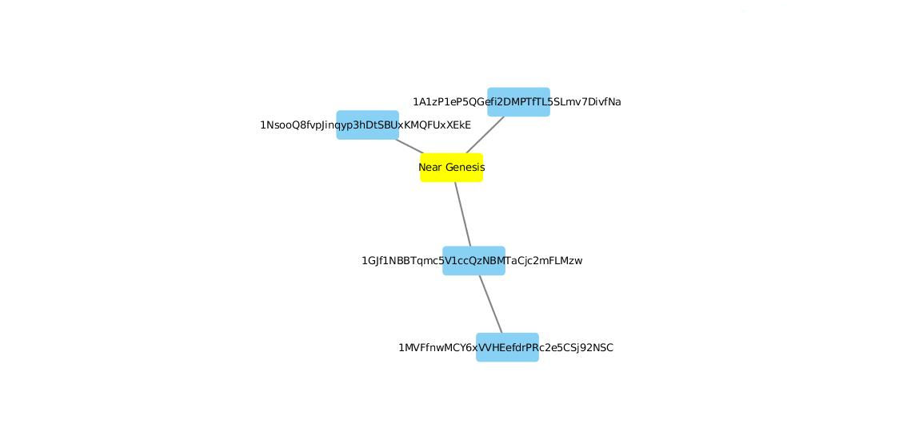

Introduction
In my research on cryptocurrency and blockchain technologies, often the final questions that form in the course of analysis are those surrounding value. Much news and publication is dedicated to defining and contextualizing the cost and market value of these commodities (as a currency and as a financial technology). However, the lack of prolific communities that use these commodities has left other, more pertinent forms of value undefined and unexplored. Some would say that due to the inability of cryptocurrencies to take hold as a popular medium of exchange, defining value is a near impossible task across scale from local to global. However, study of small groups who have adopted these currencies can provide keen insights as to how value is produced and defined in numerous ways by those who use them.
As part of the solution set I've conceptualized to answer how value may be defined by groups who use cryptocurrencies, I created the bitcoin graph library to pull wallet-level transactions into networks for exploratory data analysis. At this moment, the Bitcoin blockchain still provides an open record of transactions around which particular social groups continue to exchange and use the Bitcoin cryptocurrency. Due to this persistent use and the increasingly abundant collection of social media posts regarding how these groups use the cryptocurrency, this library is a critical element in the understanding of how alternative currency systems can elucidate specific forms of value production.
How It Works
The manner in which this Python-based library works is fairly simple, yet I will elaborate on how the source code takes Bitcoin transaction and converts them into graph objects for analysis.
# import the library
from bitcoin_graph import bitcoin_graph
# you can input a single wallet address or a list of dictionaries with metadata
node_data = [('1DqeUNa3wqJRamTEUMTiUXHAQynQuLh426', {'name': 'Near Genesis'})]
# this will take a single wallet address of a list of dictionaries with metadata
edge_data = bitcoin_graph.bitcoin_network(node_data)
# this will output a Networkx graph object
graph_object = bitcoin_graph.bitcoin_graph(node_data, edge_data)
# you can then export to one of several formats
bitcoin_graph.bitcoin_data_export(graph_object, 'graphml', 'filename')
As you can see above, the blockchain.com and networkx APIs do a lot of the heavy lifting, allowing you to export transaction networks in several formats. The below image is a view of the graphml file output using Cytoscape.
 A network object for the Bitcoin genesis block{kind=link}
With this simple, yet extremely useful API, I can now start my analysis of much more complex networks using Bitcoin transactions. The combination of these networks and additional contextual data will allow me to better understand how subgroups and cliques manifest unique forms of Bitcoin-backed value.
Making Sense of Transactions
In 2013, the FBI and US Marshals made one of the largest Bitcoin seisures in history when Ross Ulbricht, the mastermind behind the Silk Road Darknet Market, was arrested. We know from public releases by both agencies that wallets were created for these seized Bitcoins to be sent to for holding during the conclusion of the investigation. We also know that these Bitcoin can be auctioned off by the agency at a later time. We can see the network to date for one of these US Marshal's wallets below:
Bitcoin transactions associated with US Marshals wallet (yellow) in Silk Road seisure{kind=link}
The US Marshals wallet (in yellow) seems to have a lot of activity, but most notable is the auction of 29,658 BTC to Tim Draper in 2014.
Transfer of Bitcoin to Tim Draper - 2014{kind=link}
It was later revealed that Draper, father of Bitcoin entrepreneur Adam Draper, paid approximately $18 million for that particular batch of Bitcoins during the auction (worth $218 million today). The Draper's are long time supporters of Bitcoin and during the rise of Bitcoin's price in 2017/early 2018 refused to sell back into fiat currency. Even after losing a quarter of a million on Mt. Gox, Tim Draper still valued Bitcoin for its potential within existing markets despite its volatility and high-risk value as an investment.
It is this same idealized form of value that is guiding my current research into groups such as white nationalists and neo-nazi groups which prefer to use Bitcoin in the mobilization of their social and political activism. This is largely due to the still remaining question: why would individuals who value economic freedom and privacy dedicate themselves to a currency and technology that is transparent and easily controlled by mining pools (via control of consensus) or state authorities (via seisure or regulation).
References
9 Infamous Bitcoin Wallets
US Marshal Bitcoin Auction 2018
Tim Draper's Op-ed
This work is licensed under a Creative Commons Attribution-NonCommercial-ShareAlike 4.0 International License.